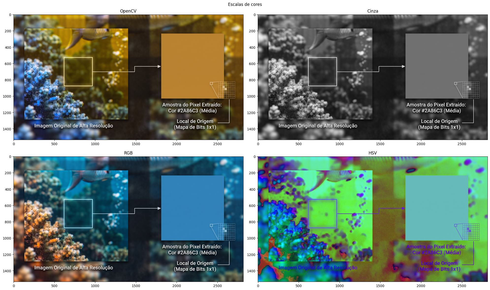
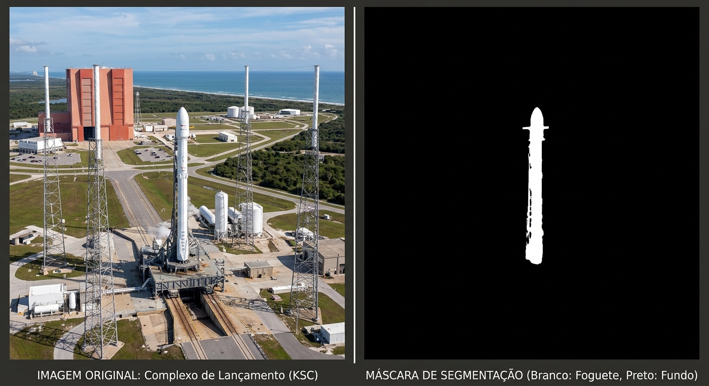

Fundamentos de imagens digitais
Fundamentos de Imagens Digitais
🛠️ Ferramentas Utilizadas
📖 1. O que é uma Imagem Digital?
Toda imagem digital é composta por pixels (picture elements), a menor unidade de representação visual computacional. Na prática, uma imagem é representada na memória como uma matriz (ou tensor) de valores numéricos, em que cada posição guarda a intensidade luminosa ou de cor daquele ponto.

Para manipular imagens via código, precisamos compreender quatro conceitos fundamentais: resolução, canais e escalas de cores, filtros e máscaras.
📐 Resolução
Consiste nas dimensões espaciais da imagem (altura × largura), representando a quantidade total de pixels organizados na matriz.
Maior resolução → Maior quantidade de pixels → Maior nível de detalhes visuais.- Exemplo prático: Uma imagem Full HD (1920x1080 pixels = 2.07 Mpixels) versus uma Ultra HD 4K (3840 x 2160 pixels = 8.29 Mpixels). Qual delas preserva mais detalhes ao darmos zoom?.
🎨 2. Canais e Escalas de Cores
Os canais representam a quantidade de camadas que compõem a matriz da imagem. Eles armazenam propriedades como cor, luminosidade e transparência em cada pixel. Em imagens padrão de 8 bits por canal (uint8), cada valor varia de 0 (ausência de intensidade) a 255 (intensidade máxima).
A forma como esses canais são combinados define a escala (ou espaço) de cores:
- Canais: R (Red), G (Green), B (Blue)
- Descrição / Aplicação: Padrão em telas, monitores e fotografia digital.
- Atenção no OpenCV: Por razões históricas, o OpenCV lê imagens no formato BGR (Azul, Verde, Vermelho). Para exibir as cores corretas no
matplotlib, convertemos de BGR para RGB.
- Canais: H (Hue / Matiz), S (Saturation / Saturação), V/B (Value / Brightness / Brilho)
- Descrição / Aplicação: Separa a cor pura (Matiz) da vivacidade (Saturação) e da iluminação (Valor). Essencial em editores de imagem para alterar a saturação sem distorcer as cores originais.
- Canais: L (Luminance / Intensidade)
- Descrição / Aplicação: Canal único (matriz 2D). Muito utilizado em fotografia P&B, detecção de bordas e pré-processamento leve.
- Canais: C (Cyan), M (Magenta), Y (Yellow), K (Black)
- Descrição / Aplicação: Modelo subtrativo voltado para impressão gráfica e editorial.
- Canais: H (Hue), S (Saturation), L (Lightness)
- Descrição / Aplicação: Desenvolvimento web (CSS) e design de interfaces (UI/UX).
- Canais: L (Lightness), a (eixo Verde-Vermelho), b (eixo Azul-Amarelo)
- Descrição / Aplicação: Gerenciamento profissional de cor e aproximação da percepção visual humana.
- Canais: Canais base + A (Alpha)
- Descrição / Aplicação: Extensão que adiciona um quarto canal para controle de opacidade/transparência.
- Canais: Y (Luma), U/Cb (Chroma Azul), V/Cr (Chroma Vermelho)
- Descrição / Aplicação: Separa a luminosidade da crominância. Usado em transmissão de vídeo e compressão JPEG.

Observação: Maior quantidade de canais → Maior volume de informação por pixel → Maior consumo de memória e processamento.
🎛️ 3. Filtros, Ajustes e Máscaras
Em processamento de imagens, filtros são operações matemáticas aplicadas sobre os pixels para modificar a aparência da imagem — seja ajustando cores e iluminação, suavizando ruídos ou destacando contornos.
Operações ponto a ponto que alteram o brilho, o contraste e a vivacidade das cores:
- Brilho e Contraste: Transformação linear dada por $g(x,y) = \alpha \cdot f(x,y) + \beta$, onde $\alpha$ (alpha) controla o contraste (amplitude entre claros e escuros) e $\beta$ (beta) soma ou subtrai brilho.
- Matiz / Saturação (HSV Shift): Altera a roda de cores (Matiz) ou a intensidade/pureza das cores (Saturação).
- Equalização de Histograma: Redistribui as intensidades dos pixels para maximizar o contraste global.
- Ajuste de Gamma (Correção Gamma): Mapeia a luminância de forma não linear para corrigir exposição.
Modificam o valor de cada pixel calculando uma combinação dos seus pixels vizinhos (convolução):
- Borramento por Média (Box Blur): Substitui o valor do pixel pela média simples dos vizinhos, provocando um borramento uniforme.
- Suavização Gaussiana (Gaussian Blur): Aplica uma matriz de pesos baseada na distribuição gaussiana para suavizar a imagem de forma natural e reduzir ruídos de alta frequência.
- Filtro de Mediana (Median Blur): Substitui o pixel pela mediana da vizinhança. Excelente para remover ruídos do tipo "sal e pimenta" preservando contornos.
- Filtro Bilateral: Suaviza regiões internas mantendo as bordas nítidas.
- Nitidez (Sharpening / Unsharp Mask): Realça bordas e detalhes finos aumentando o contraste entre pixels adjacentes.
- Sobel: Calcula o gradiente de intensidade nas direções horizontal ($X$) e vertical ($Y$) para destacar transições de brilho.
- Canny: Algoritmo multi-estágio de alta precisão para extração de contornos finos (usa suavização gaussiana, gradiente, supressão de não-máximos e histerese).
- Prewitt: Semelhante ao Sobel, opera com máscaras de convolução direcionais para estimar bordas.
- Erosão: Encolhe regiões claras da imagem, removendo pequenos ruídos brancos e desconectando objetos finos.
- Dilatação: Expande regiões claras, preenchendo pequenos buracos e conectando estruturas próximas.
- Abertura / Fechamento: Combinações de erosão e dilatação usadas para limpar o fundo (abertura) ou fechar falhas internas (fechamento).
- Emboss (Relevo): Cria um efeito tridimensional simulando luz e sombra ao longo das bordas.
- Posterizar / Vetorização: Reduz a paleta de cores da imagem, agrupando gradientes em faixas sólidas.
- Vinheta: Escurece gradualmente as bordas externas para direcionar o foco ao centro da cena.
🎭 Máscaras
O termo máscara aparece em dois contextos complementares no processamento de imagens:
- Máscara de Região (ROI / Recorte Binário): Uma imagem em preto e branco (0 e 255) de mesma resolução usada para selecionar quais pixels serão mantidos ou editados (região branca) e quais serão ocultados ou ignorados (região preta).
- Máscara de Convolução (Kernel): Uma pequena matriz (ex.: $3\times3$ ou $5\times5$) que desliza sobre a imagem para calcular borramento, nitidez ou bordas.

💻 4. Prática: Construindo um Editor de Imagens
Nesta prática, vamos construir passo a passo um Editor de Imagens em Python capaz de realizar:
- Conversão de escalas de cores (
RGB,Escala de Cinza,HSV); - Mudança de brilho, contraste e saturação;
- Borramento, suavização e aplicação de filtros (Média, Gaussiano, Mediana, Bilateral, Nitidez e Bordas).
Dica: Este material utiliza a biblioteca OpenCV como referência. Caso queira consultar os comandos equivalentes na biblioteca Pillow (PIL), acesse o guia comparativo do CodoRaven.
Passo 1: Carregar a imagem e inspecionar sua estrutura
Primeiro, importamos as bibliotecas, abrimos a imagem com o OpenCV e verificamos suas dimensões (shape) e quantidade de canais.
import cv2
import numpy as np
import matplotlib.pyplot as plt
# 1. Abertura da imagem (substitua pelo caminho da sua imagem no Colab)
img_bgr = cv2.imread('caminho_da_imagem.jpg')
# Conversão base de BGR (padrão OpenCV) para RGB (padrão de exibição)
img_rgb = cv2.cvtColor(img_bgr, cv2.COLOR_BGR2RGB)
print('Inspeção da Imagem ' + '=' * 25)
print(f'Resolução (Altura x Largura): {img_rgb.shape[0]} x {img_rgb.shape[1]} pixels')
print(f'Quantidade de canais: {img_rgb.shape[2]}')
print(f'Tipo de dado (dtype): {img_rgb.dtype}')
print('=' * 44)Passo 2: Conversão entre escalas de cores
Vamos converter a imagem para diferentes espaços de cores (RGB, Cinza e HSV) e comparar os resultados.
# Conversões de escala de cor
img_cinza = cv2.cvtColor(img_bgr, cv2.COLOR_BGR2GRAY)
img_hsv = cv2.cvtColor(img_bgr, cv2.COLOR_BGR2HSV)
# Visualização lado a lado
fig, ax = plt.subplots(2, 2, figsize=(14, 10))
ax[0][0].set_title('Original no OpenCV (BGR)')
ax[0][0].imshow(img_bgr)
ax[0][0].axis('off')
ax[0][1].set_title('Escala de Cinza (1 Canal)')
ax[0][1].imshow(img_cinza, cmap='gray')
ax[0][1].axis('off')
ax[1][0].set_title('RGB (Cores Reais)')
ax[1][0].imshow(img_rgb)
ax[1][0].axis('off')
ax[1][1].set_title('Espaço HSV (Matiz, Saturação, Brilho)')
ax[1][1].imshow(img_hsv)
ax[1][1].axis('off')
fig.suptitle('Comparação de Escalas de Cores', fontsize=16)
plt.tight_layout()
plt.show()Passo 3: Ajustes de Brilho, Contraste e Saturação
- Brilho e Contraste: Usamos
cv2.convertScaleAbs(img, alpha, beta), ondealphamultiplica os pixels (contraste:1.0mantém original,> 1.0aumenta) ebetasoma um valor constante (brilho:0mantém original, valores positivos clareiam e negativos escurecem). - Saturação: Convertemos a imagem para
HSV, multiplicamos o canal S (índice1) pelo fator desejado e convertemos de volta paraRGB.
def ajustar_brilho_contraste(img_rgb, contraste=1.0, brilho=0):
"""
contraste (alpha): 0.5 (baixo) a 3.0 (alto) | padrão = 1.0
brilho (beta): -100 (escuro) a 100 (claro) | padrão = 0
"""
return cv2.convertScaleAbs(img_rgb, alpha=contraste, beta=brilho)
def ajustar_saturacao(img_rgb, fator_saturacao=1.0):
"""
fator_saturacao: 0.0 (tons de cinza) a 3.0 (super saturado) | padrão = 1.0
"""
hsv = cv2.cvtColor(img_rgb, cv2.COLOR_RGB2HSV).astype(np.float32)
hsv[:, :, 1] = np.clip(hsv[:, :, 1] * fator_saturacao, 0, 255)
hsv = hsv.astype(np.uint8)
return cv2.cvtColor(hsv, cv2.COLOR_HSV2RGB)
# Testando os ajustes
img_brilho_contraste = ajustar_brilho_contraste(img_rgb, contraste=1.4, brilho=30)
img_saturada = ajustar_saturacao(img_rgb, fator_saturacao=1.8)Passo 4: Borramento, Suavização e Aplicação de Filtros
Agora criamos as operações espaciais de borramento, suavização e realce/detecção de bordas:
def aplicar_filtro(img_rgb, tipo='nenhum', intensidade=5):
# Garante que o tamanho da máscara (kernel) seja ímpar e >= 3
k = max(3, int(intensidade))
if k % 2 == 0:
k += 1
if tipo == 'borramento_media':
return cv2.blur(img_rgb, (k, k))
elif tipo == 'suavizacao_gaussiana':
return cv2.GaussianBlur(img_rgb, (k, k), 0)
elif tipo == 'suavizacao_mediana':
return cv2.medianBlur(img_rgb, k)
elif tipo == 'suavizacao_bilateral':
# Suaviza preservando as bordas
return cv2.bilateralFilter(img_rgb, d=k, sigmaColor=75, sigmaSpace=75)
elif tipo == 'nitidez':
kernel_nitidez = np.array([
[ 0, -1, 0],
[-1, 5, -1],
[ 0, -1, 0]
])
return cv2.filter2D(img_rgb, -1, kernel_nitidez)
elif tipo == 'bordas_canny':
cinza = cv2.cvtColor(img_rgb, cv2.COLOR_RGB2GRAY)
return cv2.Canny(cinza, threshold1=80, threshold2=180)
elif tipo == 'relevo_emboss':
kernel_emboss = np.array([
[-2, -1, 0],
[-1, 1, 1],
[ 0, 1, 2]
])
return cv2.filter2D(img_rgb, -1, kernel_emboss)
return img_rgbPasso 5: Juntando Tudo — O Editor de Imagens Completo
Por fim, integramos todas as funcionalidades em uma única função editor_de_imagens. No Google Colab, você pode usar ipywidgets (@interact) para controlar os parâmetros com barras deslizantes (sliders) em tempo real!
from ipywidgets import interact, FloatSlider, IntSlider, Dropdown
def editor_de_imagens(
escala='RGB',
brilho=0,
contraste=1.0,
saturacao=1.0,
filtro='nenhum',
intensidade_filtro=5
):
# 1. Ajuste de brilho, contraste e saturação na base RGB
editada = ajustar_brilho_contraste(img_rgb, contraste=contraste, brilho=brilho)
editada = ajustar_saturacao(editada, fator_saturacao=saturacao)
# 2. Aplicação de borramento, suavização ou filtro
editada = aplicar_filtro(editada, tipo=filtro, intensidade=intensidade_filtro)
# 3. Conversão final de escala de cor (se a saída ainda tiver 3 canais)
cmap_exibicao = None
if editada.ndim == 2:
cmap_exibicao = 'gray'
elif escala == 'Cinza':
editada = cv2.cvtColor(editada, cv2.COLOR_RGB2GRAY)
cmap_exibicao = 'gray'
elif escala == 'HSV':
editada = cv2.cvtColor(editada, cv2.COLOR_RGB2HSV)
# 4. Exibição comparativa: Original vs. Editada
fig, ax = plt.subplots(1, 2, figsize=(14, 6))
ax[0].set_title('Imagem Original')
ax[0].imshow(img_rgb)
ax[0].axis('off')
ax[1].set_title(f'Editada ({escala} | Filtro: {filtro})')
ax[1].imshow(editada, cmap=cmap_exibicao)
ax[1].axis('off')
plt.tight_layout()
plt.show()
# Painel interativo no Google Colab
interact(
editor_de_imagens,
escala=Dropdown(options=['RGB', 'Cinza', 'HSV'], value='RGB', description='Escala:'),
brilho=IntSlider(min=-100, max=100, step=5, value=0, description='Brilho:'),
contraste=FloatSlider(min=0.5, max=3.0, step=0.1, value=1.0, description='Contraste:'),
saturacao=FloatSlider(min=0.0, max=3.0, step=0.1, value=1.0, description='Saturação:'),
filtro=Dropdown(
options=[
'nenhum',
'borramento_media',
'suavizacao_gaussiana',
'suavizacao_mediana',
'suavizacao_bilateral',
'nitidez',
'bordas_canny',
'relevo_emboss'
],
value='nenhum',
description='Filtro:'
),
intensidade_filtro=IntSlider(min=3, max=31, step=2, value=5, description='Intensidade:')
);💭 Para ir mais a fundo...
📚 Materiais e artigos sugeridos
- Documentação Oficial do OpenCV — Image Processing in OpenCV (Python)
- CodoRaven — Comparativo prático entre OpenCV e Pillow
🤖 Prompts para estudar com LLMs
Copie e cole os prompts abaixo no seu assistente de IA favorito para aprofundar a base teórica:
-
Representação Matricial, Amostragem e Quantização:
"Explique como uma imagem digital monocromática e uma colorida são representadas matematicamente na memória (como matrizes/tensores). Aborde os conceitos de amostragem espacial (resolução espacial) e quantização de intensidade (resolução em tons de cinza ou profundidade de bits), detalhando o impacto de cada um na perda ou preservação de detalhes visuais."
-
Espaços de Cores na Visão Computacional:
"Explique o funcionamento dos canais de cor em imagens digitais. Compare o espaço de cores RGB com o HSV (ou HSL) e o CIELAB, explicando em quais cenários de visão computacional ou tratamento de imagem é mais vantajoso converter uma imagem de RGB para HSV ou para tons de cinza (grayscale)."
-
Máscaras e Operações Morfológicas:
"Explique o conceito de máscaras binárias e operações morfológicas básicas em processamento de imagens (Erosão, Dilatação, Abertura e Fechamento). Explique intuitivamente e matematicamente como cada uma dessas quatro operações altera os pixels de uma imagem binarizada e dê exemplos clássicos de uso."